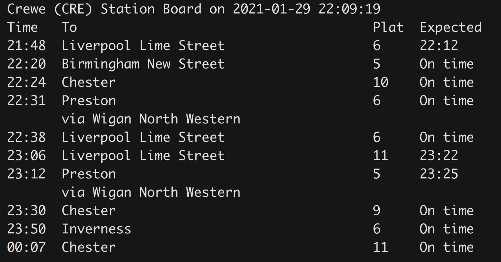
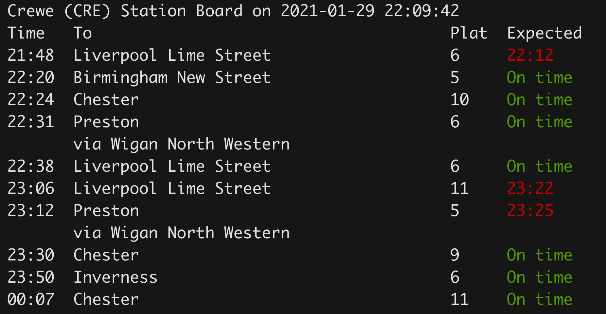

The goal of trainR is to provide a simple interface to the National Rail Enquiries (NRE) systems. There are few data feeds available, the simplest of them is Darwin, which provides real-time arrival and departure predictions, platform numbers, delay estimates, schedule changes and cancellations. Other data feeds provide historical data, Historic Service Performance (HSP), and much more. trainR simplifies the data retrieval, so that the users can focus on their analyses. For more details visit https://www.nationalrail.co.uk/46391.aspx.
Installation
You can install the released version of trainR from CRAN with:
install.packages("trainR")And the development version from GitHub with:
# install.packages("devtools")
devtools::install_github("villegar/trainR", "dev")Setup
Before starting to retrieve data from the NRE data feeds, you must obtain an access token. Visit the following website for details: http://realtime.nationalrail.co.uk/OpenLDBWSRegistration/
Once you have received your access token, you have to store it in the .Renviron file; this can be done by executing the following command:
trainR::set_token()This will open a text file, .Renviron, add a new line at the end (as follows):
<token> should be replaced by the access token obtained from the NRE. Save the changes and restart your R session.
You only need to perform this configuration once.
Example
Load trainR to your working environment:
Arrivals board at Reading Station (RDG)
Generated on 2021-02-06 15:42:40.
rdg_arr <- trainR::GetArrBoardWithDetailsRequest("RDG")
print(rdg_arr)
#> Reading (RDG) Station Board on 2021-02-06 15:42:41
#> Time From Plat Expected
#> 15:40 Bristol Temple Meads 10 15:37
#> 15:43 London Paddington 14 On time
#> 15:44 London Paddington 12 15:49
#> 15:47 Swansea 10 On time
#> 15:53 London Paddington 9 15:56
#> 15:54 Hereford 10A 15:57
#> 15:57 Basingstoke 2 On time
#> 16:11 London Paddington 9 On time
#> 16:11 London Waterloo 4 On time
#> 16:13 London Paddington 14 On timeDepartures board at Reading Station (RDG)
Generated on 2021-02-06 15:42:42.
rdg_dep <- trainR::GetDepBoardWithDetailsRequest("RDG")
print(rdg_dep)
#> Reading (RDG) Station Board on 2021-02-06 15:42:43
#> Time To Plat Expected
#> 15:41 London Paddington 10 On time
#> 15:42 London Waterloo 4 On time
#> 15:50 London Paddington 10 On time
#> 15:52 Basingstoke 2 On time
#> 15:52 Ealing Broadway 14 On time
#> 15:53 Didcot Parkway 12 On time
#> 15:55 Bristol Temple Meads 9 15:57
#> 15:56 London Paddington 10A 15:58
#> 16:10 Newbury 1 On time
#> 16:12 London Waterloo 6 On timeAdd some colour (Terminal output only)
Now you can add some colour to the service boards, based on their expected time:
- “On time” and early services:
green - “Delayed” and delayed by 5 or less minutes:
yellow - “Cancelled” and delayed over 5 minutes:
red
Without colours:
trainR::GetDepBoardWithDetailsRequest("CRE")
With colours:
options(show_colours = TRUE)
trainR::GetDepBoardWithDetailsRequest("CRE")
Get services without details (calling points)
These requests are useful if the calling points are not relevant for your analyses, visualisations, etc.
Arrivals board at Reading Station (RDG)
Generated on 2021-02-06 15:42:43.
rdg_arr <- trainR::GetArrBoardRequest("RDG")
print(rdg_arr)
#> Reading (RDG) Station Board on 2021-02-06 15:42:44
#> Time From Plat Expected
#> 15:40 Bristol Temple Meads 10 15:37
#> 15:41 London Waterloo 6 On time
#> 15:43 London Paddington 14 On time
#> 15:44 London Paddington 12 15:49
#> 15:47 Swansea 10 On time
#> 15:53 London Paddington 9 15:56
#> 15:54 Hereford 10A 15:57
#> 15:57 Basingstoke 2 On time
#> 16:01 Didcot Parkway 15 On time
#> 16:11 London Paddington 9 On time
#> 16:11 London Waterloo 4 On time
#> 16:13 London Paddington 14 On time
#> 16:16 London Paddington 9B On time
#> 16:17 Plymouth 11 On time
#> 16:26 London Paddington 7 On time
#> 16:27 Bedwyn 11A On time
#> 16:31 London Paddington 7B On time
#> 16:33 Redhill 5 On time
#> 16:39 Manchester Piccadilly 7B On time
#> 16:40 Bristol Temple Meads 10 On time
#> 16:41 London Waterloo 6 On time
#> 16:41 Newbury 1 On time
#> 16:43 London Paddington 14 On time
#> 16:44 London Paddington 12 On time
#> 16:46 Swansea 10 On time
#> 16:53 London Paddington 9 On time
#> 16:54 Worcester Foregate Street 10A On time
#> 16:56 Basingstoke 2 On time
#> 16:56 London Paddington 8B On time
#> 17:01 Didcot Parkway 15 On time
#> 17:02 Penzance 11A On time
#> 17:10 Bournemouth 13B On time
#> 17:11 London Paddington 9 On time
#> 17:11 London Waterloo 4 On time
#> 17:13 London Paddington 14 On time
#> 17:16 London Paddington 9B On time
#> 17:21 Bedwyn 11A On time
#> 17:32 London Paddington 7B On time
#> 17:33 Cheltenham Spa 11A On time
#> 17:33 Redhill 5 On time
#> 17:38 Newbury 1 On time
#> 17:39 Manchester Piccadilly 7 On timeDepartures board at Reading Station (RDG)
Generated on 2021-02-06 15:42:44.
rdg_dep <- trainR::GetDepBoardRequest("RDG")
print(rdg_dep)
#> Reading (RDG) Station Board on 2021-02-06 15:42:45
#> Time To Plat Expected
#> 15:41 London Paddington 10 On time
#> 15:42 London Waterloo 4 On time
#> 15:50 London Paddington 10 On time
#> 15:52 Basingstoke 2 On time
#> 15:52 Ealing Broadway 14 On time
#> 15:53 Didcot Parkway 12 On time
#> 15:55 Bristol Temple Meads 9 15:57
#> 15:56 London Paddington 10A 15:58
#> 16:10 Newbury 1 On time
#> 16:12 London Waterloo 6 On time
#> 16:13 Swansea 9 On time
#> 16:15 Ealing Broadway 15 On time
#> 16:15 Manchester Piccadilly 13B On time
#> via Coventry & Stoke-on-Trent
#> 16:19 Great Malvern 9B On time
#> 16:19 London Paddington 11 On time
#> 16:20 Redhill 5 On time
#> 16:22 Ealing Broadway 14 On time
#> 16:28 Plymouth 7 On time
#> 16:30 London Paddington 11A On time
#> 16:34 Bedwyn 7B On time
#> 16:41 London Paddington 10 On time
#> 16:42 London Waterloo 4 On time
#> 16:48 London Paddington 10 On time
#> 16:49 Bournemouth 7B On time
#> 16:52 Basingstoke 2 On time
#> 16:52 Ealing Broadway 14 On time
#> 16:53 Didcot Parkway 12 On time
#> 16:55 Bristol Temple Meads 9 On time
#> 16:56 London Paddington 10A On time
#> 16:58 Cheltenham Spa 8B On time
#> 17:05 London Paddington 11A On time
#> 17:10 Newbury 1 On time
#> 17:12 London Waterloo 6 On time
#> 17:13 Swansea 9 On time
#> 17:15 Ealing Broadway 15 On time
#> 17:15 Manchester Piccadilly 13B On time
#> via Coventry & Stoke-on-Trent
#> 17:19 Hereford 9B On time
#> 17:20 Redhill 5 On time
#> 17:22 Ealing Broadway 14 On time
#> 17:23 London Paddington 11A On time
#> 17:29 Penzance 7 On time
#> 17:34 Bedwyn 7B On time
#> 17:35 London Paddington 11A On time
#> 17:41 London Paddington 10 On timeAcknowledgements
Access to the data feeds it is only possible thanks to the National Rail Enquiries. This package is just a tool to facilitate access to the data. For more information about the available data feeds, visit https://www.nationalrail.co.uk.

Code of Conduct
Please note that the trainR package is released with a Contributor Code of Conduct. By contributing to this project, you agree to abide by its terms.